A daily reason to open India’s heavy equipment marketplace.
Role
UX Design Intern
Timeline
May 2023 – Jun 2024
Platform
iOS and Android
Focus
Retention and engagement
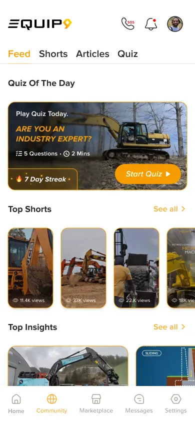
EQUIP9 Community case study
Quick read
The problem
Equip9 serves six kinds of people, and they all share one habit. They only open the app to run an errand. Once the deal is done, they close it and nothing on the home screen gives them a reason to come back.
What we did
I designed Community, a fifth tab with Shorts to watch, Insights to read and an Industry IQ quiz to play. It sits under My Business on Home, so the marketplace still stays first.
Home
The same home, with a reason to come back
The old home was just banners, shortcuts and listings, and every row was an errand. The new one keeps My Business on top and slides one Community module underneath. Which module comes first depends on whether someone mostly watches, reads or plays.
Before
After
Shorts first
Insights first
Quiz first
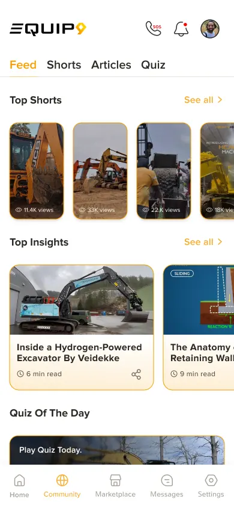
Community
Bottom Nav
Navigation
A fifth tab gives content an address
Community joins the bottom bar as a globe next to Home. Inside, four tabs run with shorts to watch, quizzes to play, insights to read and one feed page with all the three. It not only entertains but serves the buyers and sellers as well.
Amber
Community Border
Warm grey
Default Border
Border
Amber means Community and Grey means everything else.
On a home that mixes listings and content, the card border tells you which category it belongs to. Shorts, Insights and the quiz carry an amber border. Marketplace cards keep the warm grey.
Shorts
Shorts
From seeing a machine to starting a lead
Shorts browse as a grid you can search, like the explore pages people already know. Tap one and it plays full screen. When the creator added contact details, a Contact Seller button sits above the caption, so wanting the machine and reaching the seller are one tap apart. This feature in a way blurrs the line between community and marketplace.
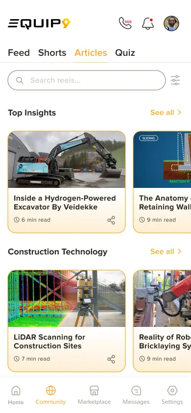
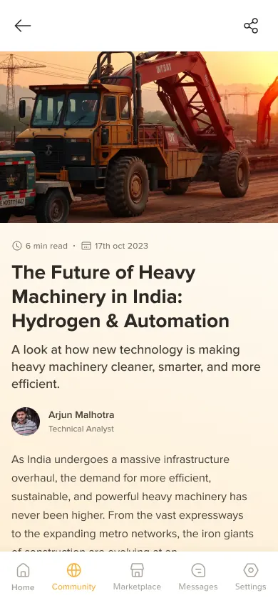
Article
Insights
Articles that are easy to find and read
Top Insights stays at the top with categories below it, so people always know where to start. Each card shows its read time before the tap, and category pages add an excerpt and the author so readers can judge an article quickly. A white and orange gradient keeps articles from looking like listings. The article page also carries the same gradient.
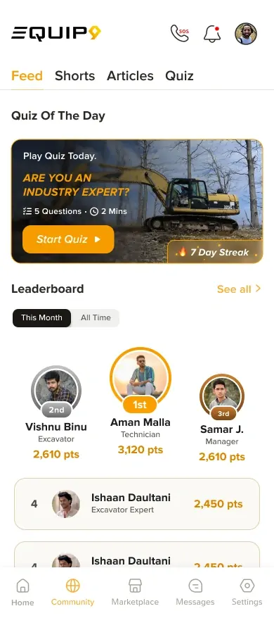
Quiz and Leaderboard
Industry IQ
Daily quizzes are habit forming
A fresh quiz every day gives people a predictable reason to open the app. The card says 5 Questions and 2 Mins , so the effort is clear, and a streak chip helps make it a daily habit. Finishing takes under two minutes, which just helps the case. The leaderboard adds a monthly and all time rank that you can keep checking.
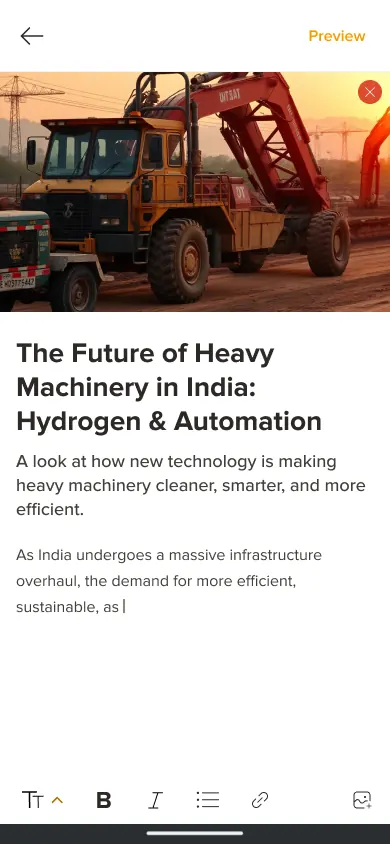
Writing an article
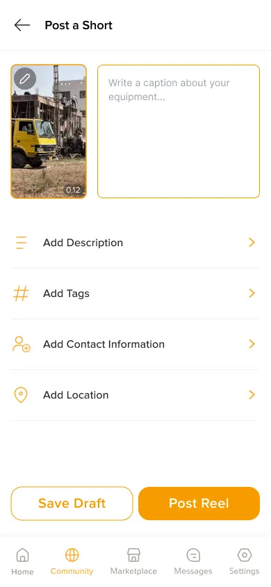
Posting a Short
Creating
Posting has to be easy on a job site
Operators, Mechanics and Dealerships keep the feed alive. Posting content should be as easy as consuming content. Sellers get their marketing and buyers always keep and eye out for new things and developments.
The result
Before, EQUIP9 gave people a reason to open it only when they had a deal. Now the home screen has Shorts, Insights and a daily quiz that bring them back between deals, and each Short leads straight into Contact Seller, so the habit feeds the marketplace.
1 · The problem
Useful but easy to forget
Open the old EQUIP9 and you meet a promo banner, four shortcut tiles and a row of equipment listings, then more rows of mechanics, dealers and partners. It is tidy and it works. It is also dull. Every block on it is something to look up, buy or sell, so nobody scrolls it for pleasure.
The shortcuts under My Business are the real tools of the app: projects, services, dealerships and leads. The listings below them are stock to browse. The bottom bar says the same thing with four tabs: Home, Marketplace, Messages and Settings. Everything is an errand.
Nothing on that screen gives anyone a reason to open it tomorrow when they have nothing to buy, rent or hire.
Six kinds of people use EQUIP9
Equipment OwnersBuy, rent out and sell machines
Business OwnersRun fleets and projects
OperatorsFind work on a machine
MechanicsGet hired for repairs
DealershipsList stock and chase leads
Financiers and InsurersFund and cover the deal
One problem they all share
They only open the app to run an errand. When the errand is done, they close it.
Homepage (Before)
2 · Research
What people already do with their phones at work
Before drawing anything I looked at what is already known about short video, quizzes and streaks, then spoke to the people EQUIP9 serves to see if it held true for them.
Secondary research
38 minof short video a day for the average Indian user (Redseer, 2022)
95%of 3,500+ urban Indians surveyed say they watch Reels daily (Ipsos for Meta, 2025)
67%of US workers say they check social media while at work (Sprout Social, 2016)
3.6×more likely to finish a course with a 7 day streak (Duolingo, 2022)
People already watch Reels and Shorts at work
Redseer puts the average Indian at about 38 minutes of short video a day, and Sprout Social found two in three workers check social media on the job. It also snowballs: in Cornell experiments, people who had watched five videos in a row were 10% more likely to choose another video over a work task.
Daily quizzes are habit-forming
A quiz opens a small gap in what you know and closes it in seconds, which is what information gap theory says drives curiosity. Retrieving an answer also beats rereading (Dunlosky et al.), and a head start pulls people on: in a car-wash study, customers with two of ten stamps pre-filled were 82% more likely to finish the card.
People like streaks, and hate breaking them
Kahneman and Tversky found a loss hurts about twice as much as an equal gain pleases, and a streak turns that into a reason to open the app daily. Duolingo learners on a 7 day streak were 3.6 times more likely to finish their course. Streaks can feel like a trap, so my rules let any engagement count and forgive a missed day.
Primary research
I spoke to people across the six roles with five open questions, worded so none of them pointed to an answer.
What do you do in your break?
How do you usually find out about new machines or what is happening in the industry?
When did you last open EQUIP9, and what for?
How do you usually pick up something new for your work?
When you have a few free minutes, how do you spend them?
“Jab machine chahiye tabhi kholte hain, warna utna nahi.”
“Timepass toh chalte rehta hai.”
Key takeaway
Purchases and business happen a few times a year, but industry knowledge and updates are appreciated every day.
3 · Principles
4 rules I held every screen to
Each one has a color and a pattern. In the screens below, a decision that follows a rule has the line tinted in that color with a bar beside it. This is the key.
Respect the clock
Say how long something takes before the tap.
Example
Quiz of the Day says up front it is 5 questions, about 2 minutes, before anyone taps Start.
Familiar first
Borrow patterns people already know.
Example
Shorts use the vertical swipe feed people already know from Reels and YouTube Shorts.
Keep the deal in reach
Content can lead people in, but the marketplace is never more than a tap away.
Example
Community adds a reason to open the app, and listings stay one tap away from every Community screen.
Unique Identity
A color or a shape means the same thing wherever it appears.
Example
The same amber border marks Community cards on every screen, so it always means the same thing.
4 · The Solution
Community: a second reason to open the app
Equipment deals happen a few times a year. Industry knowledge, job leads and looking for expansion is an every day thing. So the deals stay exactly where they were, and Community adds a place to go when there is no work. Just watch a machine in action, read about LiDAR scanning or play a two-minute quiz.
Before
Homepage (Before)
After
Shorts first
Insights first
Quiz first
The home is the same, but now there is another reason to come back. On the left is the home people knew. The three on the right are the new one. A single frame cannot show the whole scroll, so there is one version for each Community format.
My Business stays on top. The banner and the four shortcuts are untouched, so the first thing anyone sees is still the work tools. Community moves in as one module right underneath, before the listings.
Every home carries Shorts, Insights and the quiz. Which module sits first follows what that person does: watch, read or play. The old home was the same for everyone. The new one is not.
The old home just showed what you needed to do. The new home also shows something worth looking at, such as a rail of Shorts or a quiz with a streak on it.
The quiz card keeps its time, length and streak on the home screen, so the habit is one tap away.
Three loops the screens support
Watch, then reach out
A Short is the easiest thing to open between jobs, and its Contact Seller button leads into the marketplace.
Play and come back
The quiz is the daily habit. The streak and the leaderboard incentivize the behaviour.
Post, then be found
Operators, Mechanics and Dealerships supply the content, which also builds their credibility.
4.1 · The bottom bar and the Community tab
A new tab, and the section behind it
Home now shows Community. The bottom bar is how people get to all of it.
Before
After
A fifth tab is the content's address
The original bar had four tabs. Community becomes the fifth, right next to Home.
Nothing is replaced. Every original tab stays. Marketplace moves one slot to the right, and nothing in the deal loop gets harder to reach.
Community gets a globe. Marketplace already uses a storefront and Messages a speech bubble, so a globe reads as a different kind of place.
Community Page
The Community Page
Tap the globe and you land on Feed. Four tabs run along the top: Feed, Shorts, Articles and Quiz. Swipe or tap between them.
The tabs run from least effort to most: Feed to skim, Shorts to watch, Articles to read, Quiz to play.
Cards cut off at the right edge tell you there is more to swipe, the way streaming rails do, with no arrows or labels.
Feed has all three formats. As on Home, the module on top changes with behavior, so a quiz player sees the quiz first and a Shorts watcher sees Shorts. The two frames show both orders.
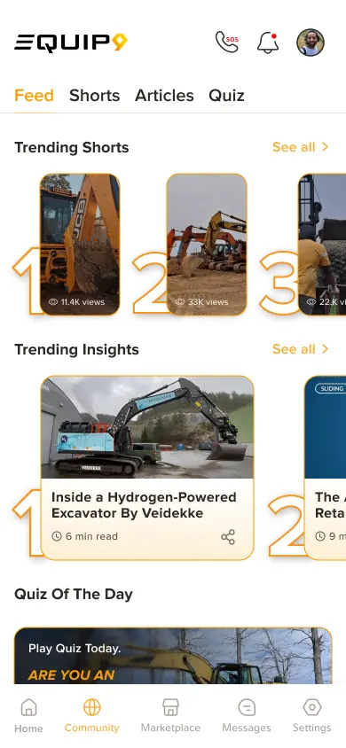
Community (Trending)
A dropped concept, but worth sharing
Trending
Ranked numerals on Top Shorts and Top Insights, borrowed from Netflix. The concept was right, but unfortunately the time was not.
A rank is a claim, and a claim needs infrastructure the app does not have yet. Like de duplicated view events, bot filtering, a time window and a job that recalculates the order. Until that pipeline exists, the numbers cannot be trusted, and a stale rank loses trust faster than no rank.
Community is a new feature, and it needs time to gain traction. A ranking only means something once there is enough content and enough viewers to rank, and at launch a Top 3 would be the first three posts.
So the shipped design uses plain Top Shorts and Top Insights. The ranked layout stays ready for when the infrastructure and the audience are both there.
One tab in the bottom bar, four pages inside it, and a plus button that follows people everywhere to create.
4.3 · Border
Community's Unique Identity
The first small component to settle was the card edge, because it shows up on nearly everything.
AmberHEX #F79C00RGB 247, 156, 0
Community Border
Warm greyHEX #A8A399RGB 168, 163, 153
Default Border
Amber means Community and Grey means everything else.
Two borders do a lot of the work. The Community Border is amber and the Default Border is the warm grey the app already used on cards.
An amber border means Community. Shorts, Insights and the quiz card get the light orange and every other card has the same grey.
Amber is already EQUIP9’s primary color, so Community reads as part of the app and not a bolted on feature.
On a home that mixes listings and content, the border is the cue. Before you read a word, you know whether a card leads to a machine for sale or to something to watch, read or play.
4.4 · Shorts
Browse, watch and then reach out
The Shorts tab and the full screen player behind it, give you the little entertainment that you need in small breaks.
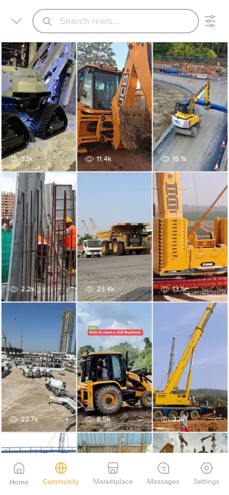
Community (Shorts)
Browse like Instagram
The Shorts tab opens as a grid you can search. Scroll and the header steps aside so only the videos remain.
A grid like feed with three columns of portrait thumbnails, with search on top, copy the explore pattern people already know. About nine Shorts fit per screen, and a JCB or a crane is easy to recognize at a glance.
Search and filter sit at the top because this audience often knows the brand or model it wants.
In full screen the header and tabs slide away and a chevron brings them back. Articles use the same gesture, so people learn it once.
Tap a thumbnail and the Short plays edge to edge. Some Shorts add a Contact Seller button.
Vertical, full screen, like and share on the right. This as well is an already existing mental model. Comments are left out of the first release because every comment is a moderation task.
Contact Seller is the high intent moment. Seeing the machine you want and reaching its seller are just one tap away.
The button only appears when the creator added contact information, which keeps the feed from turning into ads. It is amber and squarer than the quiz pills, so it reads as a transaction, and it sits left of Like and Share so a thumb aimed at one does not hit the other.
4.5 · Insights
From the feed to a long read
The Articles tab and the reading page it opens.
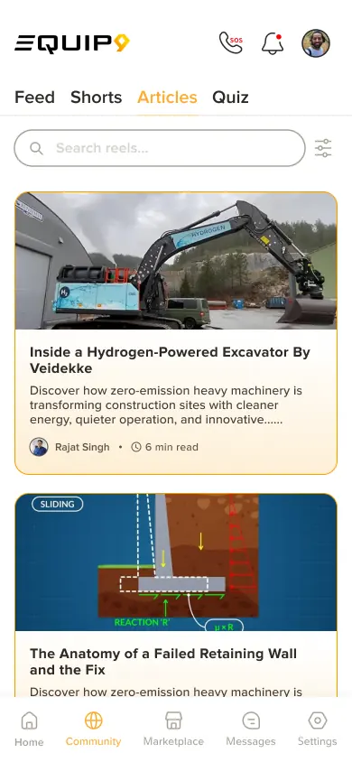
Community (Insights)
Depth that builds trust
Articles risk looking like one more listing. Everything else in the app is a white card with a grey edge, and a long read has to look like something you open on purpose. Top Insights comes first and categories follow as rails, and they open into their own page.
Marketplace cards are white with a warm grey edge. Insight cards fade from cream to white under an amber border, so an article never gets mistaken for a listing. The cream then carries into the article page, so the card and the page feel like one thing.
Top Insights never moves, so there is always a familiar place to start. The categories below it are the discovery layer.
A category page has only a few articles, so the card grows into a bigger version with an excerpt and the author’s name. The excerpt lets a reader judge relevance without opening the article.
The author is a credibility cue. In a trade where trust is currency, who wrote about hydraulics matters as much as the headline.
Article Page
A quiet page for a long read
The article page has one job. To let someone read comfortably.
The cream gradient behind the headline matches the cream of the Insights card, so card and page feel like one thing. It fades to white where the text starts, which is a high contrast surface for a long read.
The read time repeats the promise from the card, and the author appears with name, avatar and job title.
Back and share stay at the top and the tab bar stays at the bottom, so there is always a way out.
4.6 · Industry IQ
Play, score & rank
Every quiz screen in one place.
Community Page (Quiz)
Play, then see where you stand
The Quiz tab pairs the quiz of the day with a leaderboard, so the points from a result have somewhere to land.
Quiz of the Day is the same card as on Home, so it is instantly familiar.
The board has two time frames. This Month resets, so a newcomer can win and All Time rewards long experience.
Role labels are included as well, which matters to people whose income depends on being trusted. The podium gives the top three a visible reward.
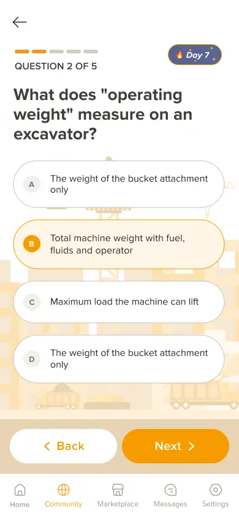
Quiz Page
One question at a time
Five questions, one per screen, with every answer a large pill that is easy to hit.
Question 2 of 5 is shown as segments and in words, so the finish line can always be seen.
Every control is a pill: the answers, back and next. A selected answer gets an amber border, a cream fill and a filled letter, so it never relies on color alone, but it is still a pill.
The quiz starts from a card that says 5 Questions and 2 Mins before the tap. Two minutes fits a break between jobs, and a fixed count gives a finish line. The 7 Day Streak chip shows what skipping today would cost.
Quizzes are easy to repeat, so the page is built to be a habit. An answer closes a small curiosity gap the moment you tap it, the score and the streak give a quick reward, and a missed day stings more than a played day pleases. These are the same pulls that make quizzes hard to put down. I use them on purpose, and I cap the quiz at two minutes so it stays a break and never a time sink. The evidence is in Research.
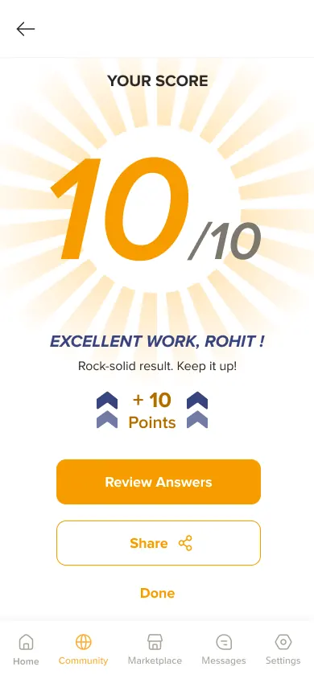
Quiz Result
A result worth sharing
The user seeing the score is a big moment, hence the huge amber and sunburst.
Actions are in order of value. Review Answers is first because the learning is in the questions you got wrong. Share is second because status among peers is part of the reward. Done is a quiet text link.
4.7 · Creating
Writing an article and posting a Short
Operators, Mechanics and Dealerships keep the feed alive, so posting has to be easy.
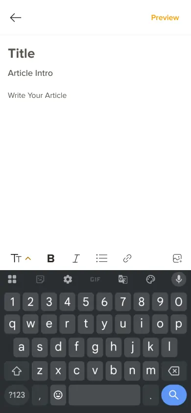
Article Writing Page
Article Half Written Page
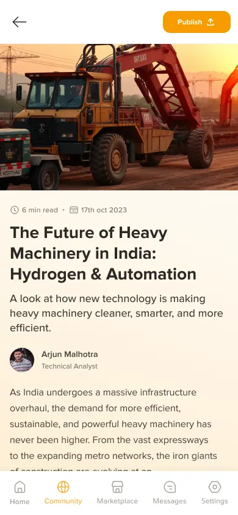
Article Preview Page
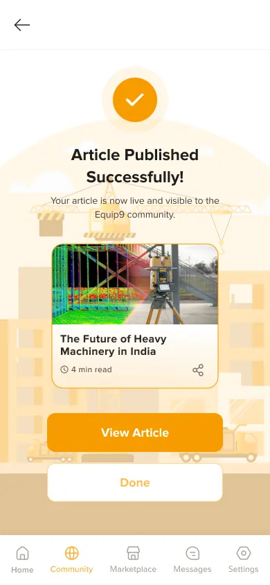
Article Posted
Write an article
Both creation flows copy patterns people already know and ask for as little as possible.
Three fields, named as they will appear: Title, Article Intro, Write Your Article. The structure teaches itself and you can always preview it before publishing.
The formatting bar sits above the keyboard and follows Medium, trimmed from eight tools to six.
Preview shows the exact reading view before you publish it, with Publish as the only filled button. Article Posted confirms with the card as it will look in the feed.
The upload screen follows YouTube’s Add details screen, with the fields that suit this trade.
The same model creators already know. A thumbnail, a caption, a list of options, Save Draft and Post Reel buttons. Visibility, audience and kids settings are gone because none of them apply here.
Only the caption is visible. Description, tags, contact information and location are behind rows, so the fastest path is video, caption, post.
Add Contact Information feeds the Contact Seller button, so a Short can become a lead. Location is there because machines are local.
Short Posted looks exactly like Article Posted. A confirmation looks the same wherever it appears, so it always means the same thing.
The small parts, and why they look the way they do
Hover or tap any component to enlarge it and see why it is the way it is.
Reel
A Short costs seconds, so the view count works as social proof where a duration would not. The amber edge marks it as Community.
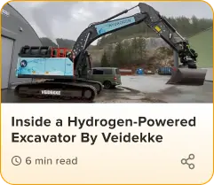
Article (Small)
Marketplace cards are white with a grey edge, so the fade keeps an article from reading as a listing. Read time sits on the card because reading costs more than watching.
Article (Large)
A category page has only a few articles, so the card gains an excerpt and the author. A reader can judge relevance.
Editor Toolbar
Text style, bold, italic, list, link and image. Enough for structure and a photo of the part, with no extra choices on a job site.
Quiz
5 Questions and 2 Mins before the tap, plus a streak chip showing what skipping costs.
Tap for the two sub-component notes
Start QuizA pill like every quiz control. Marketplace actions are squarer, so shape separates playing from buying.
7 Day StreakSits beside Start Quiz so you see where you stand.
4.9 · Outcome
How I would know it works
Community succeeds if people come back on days they have nothing to buy, and deals do not suffer for it. Four numbers tell that story.
Content-only sessionsVisits with no marketplace action. People are coming back for Community itself.
D7 and D30 retentionThe return visits hold after the first week and the first month.
Quiz completion and 7-day streaksHow many people play, and how many keep playing.
Leads per active userThe guardrail. Community should send people to deals, never away from them.
5 · Inspirations
What I borrowed, and what I changed
Four apps shaped this project. Each card shows what I took and what I changed.
Netflix
Familiar first
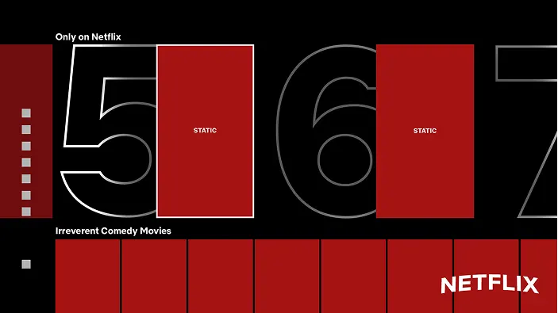
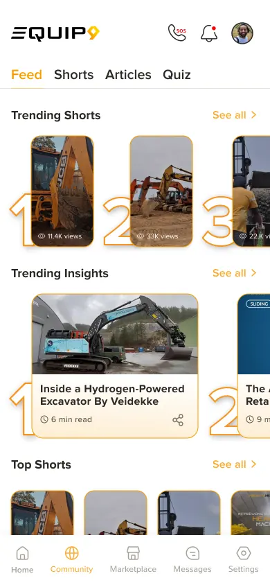
Borrowed the peeking card rails and the ranked numerals. But this is on hold until the views are trusted enough to rank.
Instagram
Familiar first
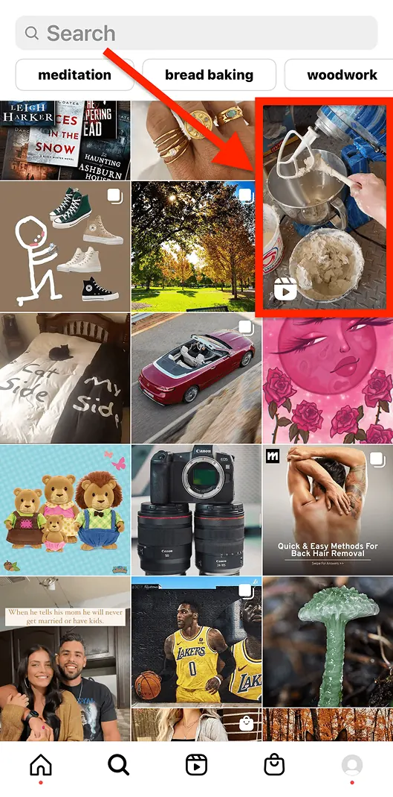
Borrowed the explore grid and tap to play. Added view counts and search by brand and model.
YouTube
Keep the deal in reach
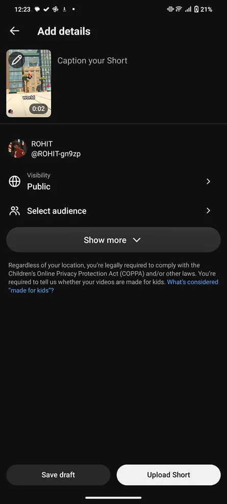
Borrowed the Add details screen. Swapped audience settings for Contact Information and Location, so a Short can become a lead.
Medium
Respect the clock
Borrowed the formatting bar above the keyboard, cut from eight tools to six.